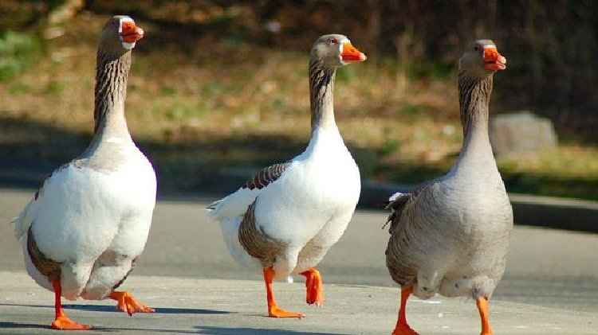

Kaz (Anser anser), iri yapısı, güçlü kanatları ve beyaz ile gri tonlardaki tüyleriyle tanınan, hem doğal yaşamda hem de evcil olarak yetiştirilen önemli bir kuş türüdür. Ortalama 70–90 cm uzunluğa ve 150–180 cm kanat açıklığına sahip olan kazlar, sulak alanlarda, göl ve nehir kenarlarında yaşar. Otçul beslenme yapısıyla çimen, tahıl ve su bitkileriyle beslenirler. Sosyal ve sürü halinde yaşayan kazlar, yüksek sesli ötüşleriyle iletişim kurar ve güçlü koruma içgüdüleriyle bilinir. Kültürel olarak bereket ve üretkenliğin sembolü hâline gelen kazlar, doğru bakım koşullarında 15–20 yıl yaşayabilir. Hem estetik görünümleri hem de pratik faydalarıyla kaz, kuş dünyasında özel bir yere sahiptir.